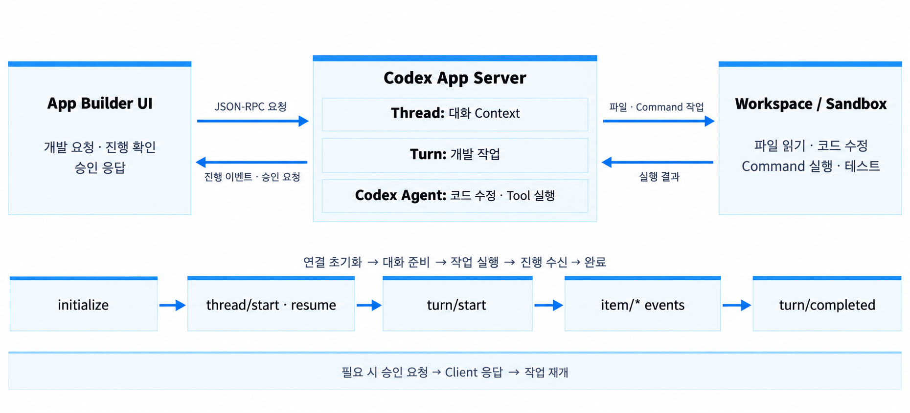

변경 요구 정의
App Builder UI에서 요구·Context 전달
Thread 생성·재개
App Builder 구현 예시 · Codex App Server로 개발 요청부터 코드 수정·검증까지 연결

App Builder UI에서 요구·Context 전달
Thread 생성·재개
Turn 시작 → Codex Agent의 코드 수정·Tool 실행
진행 이벤트를 UI에 전달
Sandbox 테스트 · 변경 결과 검토
정책에 따라 승인 요청·응답
Turn 완료 후 검증된 변경을 배포 단계로 전달
App · 기능 재사용